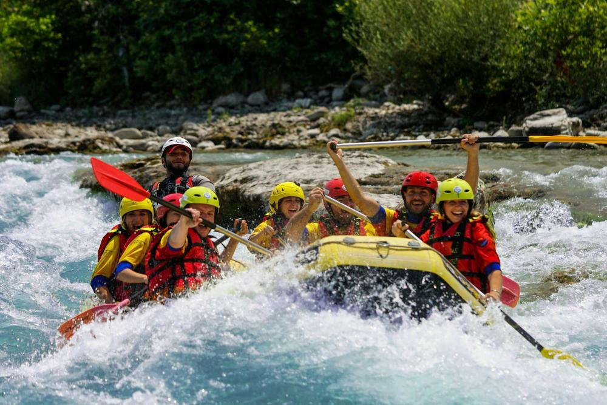
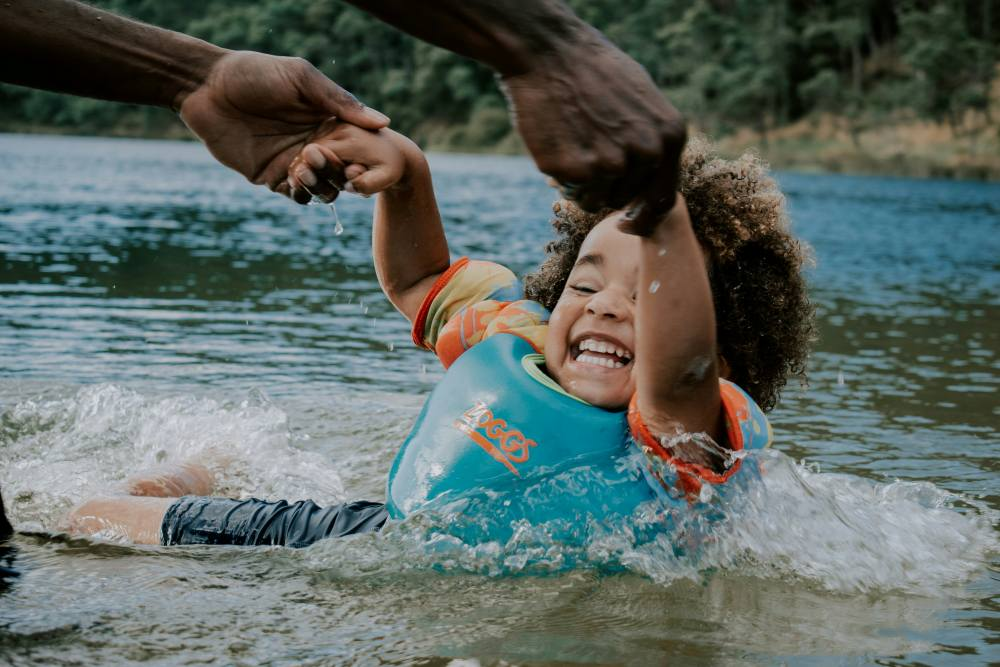

Rafting experience
We offer fun, safe, and memorable rafting trips that everyone can enjoy, from first-timers to seasoned adventurers.

We offer fun, safe, and memorable rafting trips that everyone can enjoy, from first-timers to seasoned adventurers.
This company was born from a father’s love and a daughter’s laughter. Our founder discovered rafting through his daughter, whose joy on the river was contagious—her laughter echoing over rushing water, her smile brighter than the sun. Wanting to give her a place where she could always feel free, happy, and safe, he built more than a business; he built a dream.
What began as a way to make his daughter happy became a place where families, friends, and adventurers can share that same joy. Every trip we guide carries the same purpose it started with: laughter, connection, and unforgettable moments on the river. At Splash White Water Rafting, every rapid tells a story, and every guest becomes part of our family.